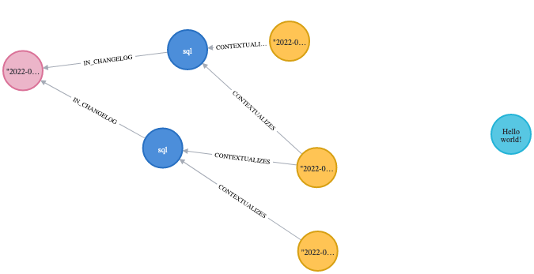

Migrate to Liquibase⚓
Liquigraph has reached EOL and is now superseded by the Neo4j plugin for Liquibase.
Since this is a one-off task, the migration utility is only exposed through the CLI and the Maven plugin.
Warning
The migration utility does not support Liquigraph postconditions. If you are in such a situation, please raise an issue. We will take it from there.
Prerequisites⚓
This requires the latest version of Liquigraph (at least 4.0.6).
🎬 Action!⚓
Adapt the following examples to your setup (path to change log, URI, username, password).
You may also add comma-separated execution contexts with --execution-contexts if needed.
Warning
The --delete flag removes the entire Liquigraph history graph from your database.
Use it like below once you validated the migration works for you.
liquigraph migrate-to-liquibase \
--changelog liquigraph.xml \
--url jdbc:neo4j:bolt://localhost \
--username neo4j \
--password s3cr3t \
--delete \
# resulting Liquibase file
--file ./liquibase.xml
./liquigraph.bat migrate-to-liquibase \
--changelog liquigraph.xml \
--url jdbc:neo4j:bolt://localhost \
--username neo4j \
--password s3cr3t \
--delete \
# resulting Liquibase file
--file ./liquibase.xml
./liquigraph.sh migrate-to-liquibase \
--changelog liquigraph.xml \
--url jdbc:neo4j:bolt://localhost \
--username neo4j \
--password s3cr3t \
--delete \
# resulting Liquibase file
--file ./liquibase.xml
You first need to configure your pom.xml as follows:
<plugin>
<groupId>org.liquigraph</groupId>
<artifactId>liquigraph-maven-plugin</artifactId>
<version>4.0.6</version>
<configuration>
<changelog>liquigraph.xml</changelog>
<!-- resulting Liquibase file -->
<liquibaseFileName>liquibase.xml</liquibaseFileName>
<deleteLiquigraphGraph>true</deleteLiquigraphGraph>
<jdbcUri>jdbc:neo4j:bolt://localhost</jdbcUri>
<username>neo4j</username>
<password>s3cr3t</password>
</configuration>
</plugin>
Now run: mvn compile liquigraph:migrate-to-liquibase.
The resulting file is in target/.
You should see that a new file named liquibase.xml has been generated with changeSet elements inside.
Here is the example of an output based on a migration tutorial.
<?xml version="1.1" encoding="UTF-8" standalone="no"?>
<databaseChangeLog xmlns="http://www.liquibase.org/xml/ns/dbchangelog" xmlns:ext="http://www.liquibase.org/xml/ns/dbchangelog-ext" xmlns:pro="http://www.liquibase.org/xml/ns/pro" xmlns:xsi="http://www.w3.org/2001/XMLSchema-instance" xsi:schemaLocation="http://www.liquibase.org/xml/ns/dbchangelog-ext http://www.liquibase.org/xml/ns/dbchangelog/dbchangelog-ext.xsd http://www.liquibase.org/xml/ns/pro http://www.liquibase.org/xml/ns/pro/liquibase-pro-4.1.xsd http://www.liquibase.org/xml/ns/dbchangelog http://www.liquibase.org/xml/ns/dbchangelog/dbchangelog-4.1.xsd">
<changeSet author="florent-biville" context="foo,bar" id="sentence-initialization" objectQuotingStrategy="LEGACY" runOnChange="true">
<sql splitStatements="true" stripComments="false">CREATE (n:Sentence {text:"Hello monde!"})</sql>
</changeSet>
<changeSet author="florent-biville" context="bar,baz" id="sentence-correction" objectQuotingStrategy="LEGACY" runAlways="true">
<preConditions onError="HALT" onFail="HALT" onSqlOutput="IGNORE">
<or>
<sqlCheck expectedResult="true">RETURN false AS result</sqlCheck>
<and>
<sqlCheck expectedResult="true">RETURN true AS result</sqlCheck>
<sqlCheck expectedResult="true">RETURN true AS result</sqlCheck>
</and>
</or>
</preConditions>
<sql splitStatements="true" stripComments="false">MATCH (n:Sentence {text:"Hello monde!"}) SET n.text="Hello world!"</sql>
</changeSet>
</databaseChangeLog>
This is the Liquibase XML equivalent of Liquigraph XML migrations.
Running the query MATCH (n) RETURN n should yield a history graph similar to this:

🥳 Congratulations!⚓
You are now a Liquibase user!
⭐️ Feel free to star the Liquibase Neo4j repository.